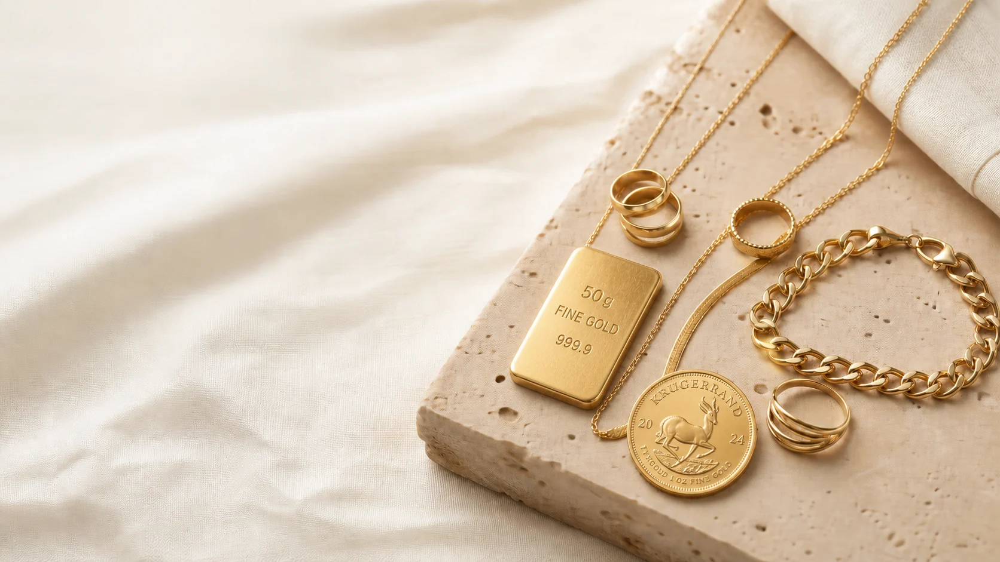

Aktualna cena
Cennik oparty na bieżących notowaniach rynku złota.
Notowania NBP • aktualizacja online
Skup złota • Gorzów Wielkopolski
Profesjonalna wycena w kilka minut, jasne zasady i natychmiastowa wypłata.
Ceny metali onlinePLN/g • zmiana od początku dnia
Dlaczego my
Bez ukrytych opłat i skomplikowanych zasad. Badamy próbę przy Tobie, ważymy na certyfikowanej wadze i pokazujemy każdy element wyceny.
Poznaj proces →Cennik oparty na bieżących notowaniach rynku złota.
Notowania NBP • aktualizacja onlineKażdy etap badania przeprowadzamy w pełni transparentnie.
Badanie próby • legalizowana wagaWycena jest zawsze bezpłatna. Decyzja należy wyłącznie do Ciebie.
0 zł za wycenę • pełna dyskrecjaCo skupujemy
Pierścionki, łańcuszki, bransoletki, kolczyki — także zerwane i niekompletne.
Sprawdź wartość → 02Złoto inwestycyjne z certyfikatem oraz bez dokumentacji.
Sprawdź wartość → 03Zegarki, eleganckie pióra, zapalniczki oraz inne wartościowe dodatki.
Zapytaj eksperta → 04Indywidualna wycena i bezpieczna obsługa mobilna.
Umów spotkanie →Precyzja klasy światowej
Każdą wycenę wykonujemy przy kliencie, korzystając z profesjonalnych urządzeń cenionych w laboratoriach i branży jubilerskiej na całym świecie.
Najwyższej klasy profesjonalne wagi zapewniające stabilny i dokładny pomiar masy.
Precyzyjne systemy wagowe pozwalające rzetelnie potwierdzić każdy wynik.
Nowoczesne spektrometry z detektorami SDD do szybkiej, bezpiecznej i dokładnej analizy składu metalu.
Wycena mobilna
Dla większych ilości złota oferujemy bezpieczny odbiór i wycenę w ustalonym miejscu.
Umów spotkanie →Aktualizowane online
Złoto, srebro, platyna i pallad. Wybierz metal, sprawdź próby oraz interaktywny trend cenowy.
Wycena online
Oblicz orientacyjną wartość złota, srebra, platyny i palladu. W jednej wycenie możesz łączyć różne metale i próby.
Wpisz wagę i kliknij przycisk, aby cena pojawiła się w podsumowaniu.
Prosto i transparentnie
Od wejścia do wypłaty — zwykle wystarczy kilka minut.
Biżuteria może być uszkodzona, niekompletna lub bez certyfikatu. Nie musisz jej wcześniej czyścić.
Pomiar wykonujemy przy Tobie na profesjonalnych wagach Sartorius i Mettler Toledo. Skład metalu analizujemy najnowszymi spektrometrami Helmut Fischer wyposażonymi w precyzyjne detektory SDD.
Kwotę wyliczamy na podstawie aktualnego cennika. Wszystkie elementy kalkulacji są jawne.
Jeśli akceptujesz ofertę, wypłacamy środki gotówką lub przelewem — zgodnie z Twoim wyborem.
Lokalnie i uczciwie
Skup Złota Gorzów to lokalny punkt stworzony z myślą o prostych, bezpiecznych i zrozumiałych transakcjach. Łączymy wiedzę rzeczoznawczą z nowoczesną obsługą.
Nie naciskamy na sprzedaż. Najpierw rzetelnie wyceniamy, wyjaśniamy wynik i dajemy Ci czas na decyzję.
Każdy przedmiot ma swoją historię. Naszym zadaniem jest uczciwie określić jego wartość.
Widzisz badanie, wagę i sposób kalkulacji.
Pracujemy na wagach Sartorius i Mettler Toledo oraz spektrometrach Helmut Fischer z detektorami SDD.
Spokojna obsługa i pełna poufność każdej transakcji.
Najczęstsze pytania
Tak. Badanie, ważenie i przygotowanie oferty są całkowicie bezpłatne i nie zobowiązują do sprzedaży.
Skupujemy złotą biżuterię, monety, sztabki, zegarki, złom jubilerski, złoto dentystyczne oraz przedmioty uszkodzone.
Nie. Próbę i masę sprawdzimy na miejscu. Do zawarcia transakcji potrzebny jest ważny dokument tożsamości.
Od próby, masy netto oraz aktualnej ceny złota na rynku. Kamienie i elementy z innych materiałów nie wchodzą do masy złota.
Po akceptacji oferty płatność realizujemy od razu — gotówką lub przelewem.
Porozmawiajmy
Odwiedź nas przy ul. Pocztowej lub skontaktuj się wcześniej. Bezpłatna wycena w punkcie nie wymaga rezerwacji.
ul. Pocztowa 11
66-400 Gorzów Wlkp.
Pon–Pt: 9:00–18:00
Sob: 10:00–14:00
Weź ze sobą złoto oraz ważny dokument tożsamości. Wycena jest bezpłatna i do niczego nie zobowiązuje.